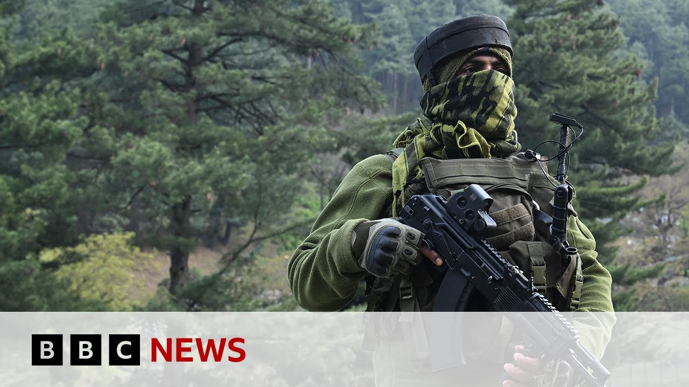

来B站一起耍【Global每日英语简报】
【联合国秘书长对克什米尔袭击后印巴紧张局势表示“深切担忧” | BBC新闻】
Summary: The UN Secretary-General expressed concerns over India-Pakistan tensions following a Kashmir attack, with India accusing Pakistan of involvement and suspending a water treaty. Bilawal Bhutto Zardari denied allegations, stating Pakistan has reformed and no longer supports terror groups, while criticizing India's emotional response.
摘要： 联合国秘书长对克什米尔袭击后印巴紧张局势表示担忧，印度指控巴基斯坦参与并暂停水条约。比拉瓦尔·布托·扎尔达里否认指控，称巴基斯坦已改革且不再支持恐怖组织，同时批评印度情绪化反应。

⏱️ Estimated Reading Time: 5 min
Now the UN Secretary General has expressed his deep concerns over tensions between India and Pakistan after the deadly attack on 26 tourists in Indian administered Kashmir.
联合国秘书长对印度控制的克什米尔地区26名游客遇袭身亡后印巴紧张局势表示深切担忧。
India accuses Pakistan of being indirectly involved and says two suspects are Pakistani nationals.
印度指控巴基斯坦间接参与，并称两名嫌疑人为巴基斯坦公民。
India has suspended a landmark water treaty in response.
印度已暂停一项具有里程碑意义的水条约作为回应。
Bilawal Bhut Zadari is chairman of the coalition party PPP and is the former foreign minister.
比拉瓦尔·布托·扎尔达里是联合政党PPP的主席及前外交部长。
He was asked about his remarks that if water doesn't flow to Pakistan, India's blood will.
他被问及此前言论“若水不流向巴基斯坦，印度的血将流”。
But first, he rejected India's allegations and told the BBC's Pakistan correspondent Azad Mashiri that Pakistan is being scapegoated.
但他首先驳斥印度指控，并向BBC巴基斯坦记者阿扎德·马希里表示巴基斯坦正被当作替罪羊。
But the prime minister has already offered uh for there to be an impartial uh investigation in Pakistan.
但总理已提议在巴基斯坦进行公正调查。
We unlike many other countries across the world have actually learned our lesson.
与全球许多国家不同，我们已吸取教训。
And in the context of these same sort of uh linkages that uh these accusations that have existed in the past, Pakistan has also undergone its own internal reform.
针对过去类似的关联指控，巴基斯坦已实施内部改革。
So much so that before I was foreign minister, Pakistan was on the FATF grey list.
甚至在我任外长前，巴基斯坦还在FATF灰名单上。
While I was foreign minister, Pakistan exited the FATF grey list, which means the international community also accepts that Pakistan has no connection as of today to any such groups.
我任外长期间，巴基斯坦退出FATF灰名单，意味着国际社会也认可巴基斯坦如今与此类组织无关。
Well, the State Department's most recent report still says there are terror groups as far as Tiban JM I'm not I'm not I'm not going to go litigate uh the details of the state department report and the issues we have with that.
尽管美国务院最新报告仍称存在恐怖组织，但我不打算争论报告细节及我们的异议。
Uh the point that I'm trying to make is Pakistan has learned its lessons.
我想强调的是巴基斯坦已吸取教训。
It's moved on from uh uh this which is a uh an old chapter in our history.
我们已翻过这一历史旧篇章。
The Indian government and the Indian military is putting out so many statements every single day.
印度政府和军方每日发布大量声明。
They are accusing Pakistan of initiating unprovoked gunfire across the line of control and initiating firing.
他们指控巴基斯坦在控制线无端开火。
There's no reason for Pakistan.
巴基斯坦没有理由这样做。
Why is Pakistan not answering?
为何巴基斯坦不回应？
Why?
为什么？
What is it for Pakistan to gain and a having a terrorist attack like this in Makbuza Kashmir or for us to uh initiate firing on the line of control?
巴基斯坦能从克什米尔恐袭或控制线开火中获得什么？
I know without hesitation that Pakistan would just be responding to firings from the Indian side.
我确信巴基斯坦只是回应印方的开火。
It's in fact it's at the end of the day it's the Indian side that's emotional right now.
事实上当前情绪化的是印方。
It's the Indian side that's being irrational right now.
目前不理智的是印方。
I believe that Pakistan has responded very calmly to a whole host of absurd accusations.
我认为巴基斯坦对诸多荒谬指控反应非常冷静。
You don't feel emotional right now.
你此刻并不情绪化。
The the reason I ask is because you made those comments over the weekend and it was in reference to India's decision to unilaterally suspend the landmark water treaty.
我之所以问是因为你周末的言论涉及印度单方面暂停水条约。
You said either water will flow or their blood will referring to India.
你说“要么水流，要么他们的血流”意指印度。
Do you think that's an unemotional calm way of responding when tensions are so high?
你认为在紧张局势下这是冷静的回应方式吗？
I'm not stationed on the border with a gun in my hand.
我并未持枪驻守边境。
I don't don't hold any position in government.
我不担任政府职务。
I was speaking to a political rally on the banks of the river Indis the day of or the day after uh this water treaty uh was violated by India.
我在印度河畔的政治集会上发言，当天或次日印度违反水条约。
I think it is supposed to not only a rational reaction uh from my side but an articulation of the feelings of the people of Pakistan and my own people who uh whom I was addressing.
我认为这不仅是我的理性反应，也表达了巴基斯坦人民及我所代表民众的感受。
The government that is in power has said that any um decision that would implement the withdrawal from the indis water treaty would be considered an act of war.
执政政府表示任何退出印度河条约的决定都将被视为战争行为。
As I'm sure you're aware when there is war um blood does flow.
你应知战争确实会流血。
Um we don't have um any rivers to shut off as a response to India.
我们无法通过断河来回应印度。
It would mean an act of war if India was to uh weaponize uh water against the people of Pakistan.
若印度将水资源武器化对抗巴基斯坦人民，即意味着战争。